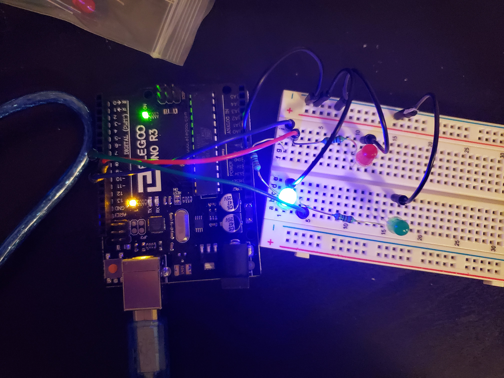
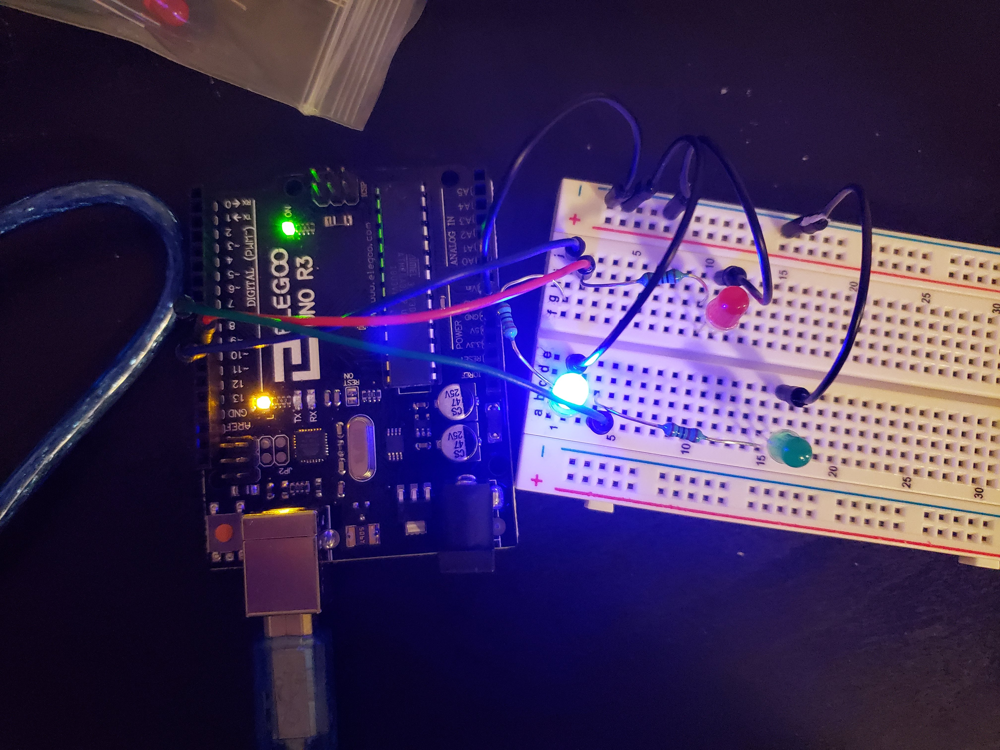

Zach Thomas Assignment 1!
 

/*
HCDE 439: Physical Computing Assignment 1
Zachary Thomas
*/
// the setup function runs once when you press reset or power the board
void setup() {
// initialize digital pin LED_BUILTIN as an output.
pinMode(10, OUTPUT); //blue light
pinMode(9, OUTPUT); //red light
pinMode(8, OUTPUT); //green light
}
// the loop function runs over and over again forever
void loop() {
digitalWrite(10, HIGH); // turn the blue light on
delay(750); // wait for 0.75 seconds
digitalWrite(10, LOW); // turn the blue light off
digitalWrite(9, HIGH); // turn the red light on
delay(150); // wait 0.15 seconds
digitalWrite(9, LOW); // turn the red light off
digitalWrite(8, HIGH); // turn the green light on
delay(150); // wait for 0.15 seconds
digitalWrite(8, LOW); // turn the green light off
digitalWrite(10, HIGH); // turn blue light on
delay(500); // wait half a second
digitalWrite(10, LOW); // turn blue light off
digitalWrite(8, HIGH); // turn green light on
delay(150); // wait 0.15 seconds
digitalWrite(8, LOW); // turn green light off
digitalWrite(9, HIGH); // turn red light on
delay(150); // wait 0.15 seconds
digitalWrite(9, LOW); // turn red light off
digitalWrite(8, HIGH); // turn blue light on
digitalWrite(10, HIGH); // turn green light on
delay(250); // wait 0.25 seconds
digitalWrite(10, LOW); // turn green light off
digitalWrite(8, LOW); // turn blue light off
digitalWrite(9, HIGH); // turn red light on
delay(150); // wait 0.15 seconds
digitalWrite(10, HIGH); // turn green light on
digitalWrite(8, HIGH); // turn blue light on
digitalWrite(9, LOW); // turn red light off
delay(150); // wait 0.15 seconds
digitalWrite(10, LOW); // turn green light off
digitalWrite(8, LOW); // turn blue light off
delay(150); // wait 0.15 seconds
digitalWrite(10, HIGH); // turn green light on
digitalWrite(8, HIGH); // turn blue light on
delay(150); // wait 0.15 seconds
digitalWrite(10, LOW); // turn green light off
digitalWrite(8, LOW); // turn blue light off
digitalWrite(9, HIGH); // turn red light on
delay(150); // wait 0.15 seconds
digitalWrite(9, LOW); // turn red light off
}